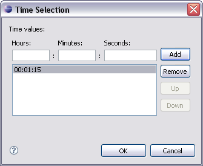

Setting iterator attributes
Spatial and temporal iterators have specific values that are not used in other
format attributes.
Spatial iterators
Because spatial iterators can display data series in both rows and columns,
you may need to specify the way that MCS should index the generated cells. MCS
can number cells either left to right first, or top to bottom first. You may
also want to set limits to the number of data sets that a user can display.
- In the 2D Indexing Direction control choose
Across Down to number from left to right (columns first). Down Across numbers
top to bottom (rows first)
- In Row Iterations or Column
Iterations, specify either Up To or Exactly and enter a number
- In Row styleclasses and Column
styleclasses, enter a space-separated list of class names. Edit
opens the Styleclass Selection dialog where you can add to, order, or remove
names. If there are fewer names than rows or columns, the list is repeated.
Temporal iterators
When you set the attributes of a temporal iterator, you can choose time values
for the iterator cells.
- In the Time Values control click Browse to
open the Time Selection dialog
- Set values for Hours Minutes
and Seconds of a time value
- Click Add to add a time to the list
- Select a value in the list and click Up or
Down to change the order to match the sequence
of cells.
The values are added to the control in the sequence you chose.
Time selection dialog

To remove a value from the list, open the dialog, select a list item, and click
Remove.
Related topics
Iterator panes
Adding iterators
Spatial iterator attributes
Temporal iterator attributes